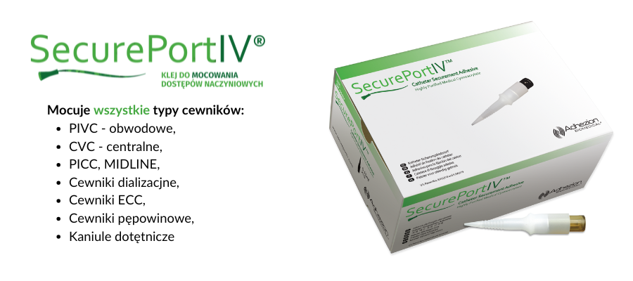
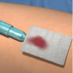
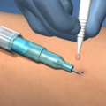
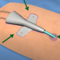
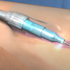

Klej do mocowania urządzeń dostępu naczyniowego.
SecurePortIV™ to klej cyjanoakrylanowy przeznaczony do mocowania urządzeń dostępu naczyniowego. Wspiera stabilizację cewnika, ogranicza ryzyko przemieszczenia oraz pomaga tworzyć barierę mikrobiologiczną.
Produkt może być stosowany u dorosłych i dzieci, również u bardzo małych pacjentów.

Dlaczego SecurePortIV?
Rozwiązanie zaprojektowane z myślą o stabilizacji dostępu naczyniowego i komforcie pracy personelu.
Stabilizacja dostępu
Pomaga ograniczyć ryzyko przemieszczenia cewnika i wspiera utrzymanie dostępu naczyniowego.
Bariera mikrobiologiczna
Wspiera ochronę miejsca wkłucia i może pomagać w ograniczaniu ryzyka zakażeń związanych z dostępem.
Łatwa aplikacja
Prosty sposób użycia wspiera codzienną pracę personelu medycznego przy zabezpieczaniu cewników.
Porównanie metod fiksacji
Zestawienie wybranych cech SecurePortIV™ i tradycyjnych metod mocowania dostępu naczyniowego.
| Cecha | SecurePortIV™ | Szycie | Plaster mocujący |
|---|---|---|---|
| Ryzyko infekcji | Niskie | Wyższe | Średnie |
| Czas aplikacji | Krótki | Dłuższy | Krótki |
| Komfort pacjenta | Wysoki | Niższy | Średni |
Jak stosować?
Przykładowy przebieg aplikacji produktu SecurePortIV™.

Krok 1Oczyść i wysusz skórę przed aplikacją.

Krok 2Nałóż 1–2 krople kleju centralnie na miejsce wkłucia.

Krok 3Opcjonalnie nałóż klej pod skrzydełka lub obok cewnika.

Krok 4Nałóż przezroczysty opatrunek zgodnie z procedurą placówki.